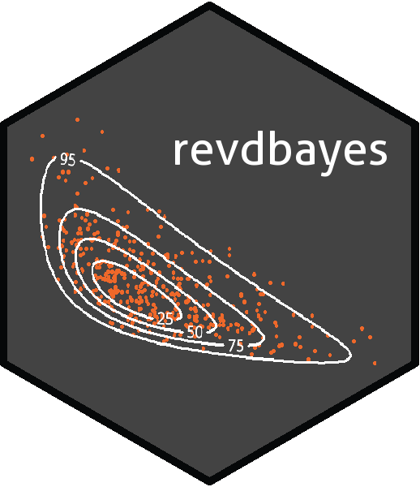

revdbayes 


What does revdbayes do?
The revdbayes package uses the ratio-of-uniforms method to produce random samples from the posterior distributions that occur in some relatively simple Bayesian extreme value analyses. The functionality of revdbayes is similar to the evdbayes package, which uses Markov Chain Monte Carlo (MCMC) methods for posterior simulation. Advantages of the ratio-of-uniforms method over MCMC in this context are that the user is not required to set tuning parameters nor to monitor convergence and a random posterior sample is produced. Use of the Rcpp package enables revdbayes to be faster than evdbayes. Also provided are functions for making inferences about the extremal index, using the K-gaps model of Suveges and Davison (2010) and the D-gaps model of Holesovsky and Fusek (2020).
A simple example
The two main functions in revdbayes are set_prior and rpost. set_prior sets a prior for extreme value parameters. rpost samples from the posterior produced by updating this prior using the likelihood of observed data under an extreme value model. The following code sets a prior for Generalised Extreme Value (GEV) parameters based on a multivariate normal distribution and then simulates a random sample of size 1000 from the posterior distribution based on a dataset of annual maximum sea levels.
data(portpirie)
mat <- diag(c(10000, 10000, 100))
pn <- set_prior(prior = "norm", model = "gev", mean = c(0,0,0), cov = mat)
gevp <- rpost(n = 1000, model = "gev", prior = pn, data = portpirie)
plot(gevp)From version 1.2.0 onwards the faster function rpost_rcpp can be used.
See the vignette “Faster simulation using revdbayes and Rcpp” for details. The functions rpost and post_rcpp have the same syntax. For example:
gevp_rcpp <- rpost_rcpp(n = 1000, model = "gev", prior = pn, data = portpirie)Vignettes
See vignette("revdbayes-a-vignette", package = "revdbayes") for an overview of the package and vignette("revdbayes-b-using-rcpp-vignette", package = "revdbayes") for an illustration of the improvements in efficiency produced using the Rcpp package. See vignette("revdbayes-c-predictive-vignette", package = "revdbayes") for an outline of how to use revdbayes to perform posterior predictive extreme value inference. Inference for the extremal index using threshold inter-exceedance times is described in vignette("revdbayes-d-kgaps-vignette", package = "revdbayes")